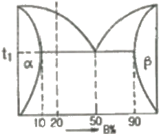
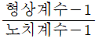
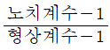
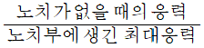
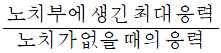
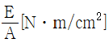
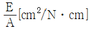
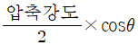
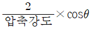
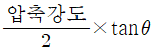

금속재료산업기사 (2014-03-02 기출문제)
1과목: 금속재료
1. 오스테나이트계 스테인리스강의 공식(pitting)을 방지하기 위한 대책이 아닌 것은?
- 할로겐 이온의 고농도를 피한다.
- 질산염, 크롬산염 등의 부동태화제를 가한다.
- 액의 산화성을 감소시키거나 공기의 투입을 많게 한다.
- 재료 중의 탄소를 적게 하거나 Ni, Cr, Mo 등을 많게 한다.
(정답률: 76%)

2. 황동의 자연균열 방지책이 아닌 것은?
- 도료를 바른다.
- 아연도금을 한다.
- 응력제거 풀림을 한다.
- 산화물 피막을 형성시킨다.
(정답률: 75%)
3. Cu, Sn, 흑연 분말을 적정 혼합하여 소결에 의해 제조한 분말야금을 합금으로 급유곤란한 부분의 베어링으로 사용되는 재료는?
- 자마크(zamak)
- 켈멧(kelmat)
- 배빗메탈(babbit metal)
- 오일라이트(oillite)
(정답률: 74%)
4. 초전도재료에 대한 설명 중 틀린 것은?
- 초전도선은 전력의 소비 없이 대전류를 통하거나 코일을 만들어 강한 자계를 발생시킬 수 있다.
- 초전도상태는 어떤 임계온도, 임계자계, 임계전류밀도보다 그 이상의 값을 가질 때만 일어난다.
- 임의의 어떤 재료를 냉각시킬 때 어느 임계온도에서 전기저항이 0(zero)이 되는 재료를 말한다.
- 대표적인 활용사례로는 고압송전선, 핵융합용 전자석, 핵자기공명단총영상장치 등이 있다.
(정답률: 71%)
5. 실용 형상기억 합금이 아닌 것은?
- Al-Si 계
- Ti-Ni 계
- Cu-Al-Ni 계
- Cu-Zn-Al 계
(정답률: 70%)
6. 구리합금에 대한 설명 중 틀린 것은?
- 황동은 Cu-Zn 계 합금이다.
- 인청동은 탄성과 내식성 및 내마모성이 크다.
- 문쯔메탈(munztz metal)은 6~4황동의 일종이다.
- 네이벌황동은 7~3황동에 Sn을 소량 첨가한 합금이다
(정답률: 70%)
7. 소결 현상을 이용하는 분말 야금의 특징이 아닌 것은?
- 절삭 공정을 생략할 수 있다.
- 다공질의 제품은 만들 수 없다.
- 용해법으로 만들 수 없는 합금을 만들 수 있다.
- 제조 과정에서 용융점까지 온도를 올릴 필요가 없다.
(정답률: 77%)
8. 철광석의 종류와 주료 성분을 옳게 연결한 것은?
- 적철광-Fe2O3
- 자철광-Fe2CO3
- 갈청광-Fe2O4
- 능철광-Fe2O4ㆍ3H2O
(정답률: 77%)
9. 금속의 공통적 특성을 설명한 것 중 틀린 것은?
- 금속적 광택을 갖는다.
- 열과 전기의 양도체이다.
- 소성 변형성이 없어 가공하기 힘들다.
- 수은을 제외한 금속은 상온에서 고체이며 결정체이다.
(정답률: 88%)
10. 성형 프레스형, 다이캐스트형 등에 사용되는 열간금형용 합금공구강의 구비요건으로 옳은 것은?
- 고온경도가 낮을 것
- 융착과 소착이 잘 일어날 것
- 히트 체킹(heat checing)에 잘 견딜 것
- 열충격, 열피로 및 뜨임연화 저항이 작을 것
(정답률: 82%)
11. 22K(22 carat)는 순금의 함유량이 약 몇 %인가?
- 25%
- 58.3%
- 75%
- 91.7%
(정답률: 90%)
12. 특수강 중의 특수 원소의 역할이 아닌 것은?
- 기계적 성질 향상
- 변태속도의 조절
- 탄소강 중 황의 증가
- 오스테나이트의 입도 조절
(정답률: 80%)
13. 고속도공구강에 대한 설명으로 틀린 것은?
- 우수한 인성을 갖는다.
- 우수한 고탄성을 갖는다.
- 우수한 내마모성을 갖는다.
- 우수한 고온경도를 갖는다.
(정답률: 74%)
14. 백주철을 탈탄 열처리하여 순철에 가까운 페라이트 기지로 만들어서 연성을 갖게 한 주철은?
- 회주철
- 백심가단주철
- 흑심가단주철
- 구상흑연주철
(정답률: 83%)
15. 비정질 금속재료에 대한 설명으로 옳은 것은?
- 재료가 초급냉법으로 제조됨으로 조성적, 구조적으로 불균일하다.
- 불규칙한 원자배열로 인해 이방성과 특정한 슬립면이 있다.
- 입계, 쌍정, 적충결함 등과 같은 국부적인 불균일조직이 많다.
- 유리나 고분자 물질과는 달리 단순한 원자구조를 가진다.
(정답률: 45%)
16. 프레스 가공 또는 판금 가공이 아닌 것은?
- 압연가공
- 굽힘가공
- 전단가공
- 압축가공
(정답률: 57%)
17. 마그네숨의 특성을 설명한 것 중 틀린 것은?
- 비중은 약 1.7 정도이다.
- 내산성은 극히 나쁘나 내알칼리성은 강하다.
- 해수에 대단히 강하며, 용해시 수소를 방출하지 않는다.
- 주물로서 마그네슘 합금은 Al 합금보다 비강도가 우수하다.
(정답률: 76%)
18. 순철이 1539℃에서 응고하여 상온까지 냉각되는 동안에 일어나는 변태가 아닌 것은?
- A5변태
- A4변태
- A3변태
- A2변태
(정답률: 84%)
19. 어느 방향으로 소성변형을 가한 재료에 역방향의 하중을 가하면 전과 같은 방향으로 하중을 가한 경우보다 소성변형에 대한 저항이 감소하는 것을 무엇이라 하는가?
- 바우싱거효과
- 크리프효과
- 재결정효과
- 포아송효과
(정답률: 86%)
20. 75%Ni의 조성을 가지는 Ni-Fe합금에 대한 설명으로 옳은 것은?
- 낮은 투자율을 가진다.
- 퍼멀로이(permalloy)라 불린다.
- 자장에 의한 응답성이 낮다.
- 주로 공구강으로 사용된다.
(정답률: 78%)
2과목: 금속조직
21. 금속간 화합물(intermetallic compound)에 대한 설명으로 틀린 것은?
- 간단한 결정구조를 갖고, 금속적 성질이 강하다.
- A, B 두 금속의 친화력이 대단히 강력하다.
- A, B 두금속은 일정한 원자비로 결합된다.
- 성분금속 원자의 상대적인 관계가 항상 일정한 고용체이다.
(정답률: 63%)
22. 냉간가공한 금속을 풀림하면 전위의 재배열에 의해 결정의 다각형화(polygonization)가 이루어지는데 이와 관련이 가장 깊은 현상은?
- 쌍정
- 재결정
- 회복
- 결정립 성장
(정답률: 48%)
23. 강의 베이나이트(bainite) 변태에 대한 설명으로 틀린 것은?
- 약 350℃ 이상에서 형성된 것을 상부 베이나이트라 한다.
- 베이나이트도 펄라이트와 마찬가지로 층상구조를 이루고 있다.
- 오스테나이트에서 베이나이트로의 변태에 의해 페라이트와 탄화물이 생성된다.
- 변태에 따른 용질원자의 분포는 탄소 원자만 이동하고 합금원소 원자는 모재에 남는다.
(정답률: 46%)
24. 그림과 같이 t3온도에서 공정반응이 끝난 후 20% B합금의 초정 α량은 얼마인가?

- 25%
- 38%
- 50%
- 75%
(정답률: 50%)
25. 결정격자 중에서 전연성 및 가공성이 우수한 결정격자는?
- 면심입방격자
- 체심입방격자
- 조밀육방격자
- 체심정방격자
(정답률: 79%)
26. 합금원소가 존재할 경우 가장 안정한 석출물은 합금 탄화물이다. 이 때 탄화물을 잘 형성하는 합금원소는?
- Al
- Mn
- Cr
- Ni
(정답률: 52%)
27. 다음의 원자결합 중 가장 약한 결합은?
- 이온결합
- 금속결합
- 반 데르 발스 결합
- 공유결합
(정답률: 79%)
28. 금속의 변형에 대한 설명으로 틀린 것은?
- 금속은 전위가 증식되면서 소성변형 된다.
- 금속은 슬립이나 쌍정에 의해서 소성변형 된다.
- 금속은 원자 전체가 동시에 이동하는 것이 아니라 전위에 의하여 조금씩 이동한다.
- 동일한 슬립면에서 반대부호의 전위가 만나면 두 개의 전위가 생성되고 불완전 결정으로 된다.
(정답률: 70%)
29. 금속의 변태점 측정법 중 도가니에 적당량의 금속을 넣어 일정한 속도로 가열하거나 냉각하면서 온도와 시간의 관계로 나타나는 곡선으로 변태점을 측정하는 방법은?
- 열팽창법
- 열분석법
- 전기저항법
- 자기분석법
(정답률: 81%)
30. 금속의 다결정체 조직으로 수지상(dendrite) 조직을 설명한 것 중 틀린 것은?
- 액상에서 고상으로 변태(응고)시 응고잠열이 방출된다.
- 응고잠열의 방출은 평면에서보다 선단부분에서 늦게 일어난다.
- 나뭇가지 모양으로 생긴 최초의 가지를 1차 수지상정이라 한다.
- 면심입방 또는 체심입방구조를 갖는 금속의 경우 가지의 성장방향은 입방 구조의 모서리 방향이 되기 때문에 수지상정의 가지는 서로 직교한다.
(정답률: 69%)
31. 전위에 대한 설명으로 옳은 것은?
- 전위의 상승운동은 온도에 무관하다.
- 전위 결함은 원자공공, 크라디온(Crowdion) 등이 있다.
- 칼날전위선은 버거스 벡터(Burgers vector)와 평행하다.
- 전위의 존재로 인해 발생되는 에너지를 변형 에너지(strain energy)라 한다.
(정답률: 66%)
32. 다음 중 확산기구에 해당되지 않는 것은?
- 링 기구
- 공석 기구
- 공격자점 기구
- 직접교환 기구
(정답률: 56%)
33. 4개의 원자가 동시에 링상으로 회전함으로써 위치가 변화되어 치환형 확산을 하는 확산기구는?
- 간접 교환형 기구
- 격자간 원자형 기구
- 원자공공형 기구
- 직접 교환형 기구
(정답률: 44%)
34. 면심입방격자에서 슬립면과 슬립방향이 옳게 짝지어진 것은?
- {0001}, ＜1211＞
- {1000}, ＜1111＞
- {110}, ＜111＞
- {111}, ＜110＞
(정답률: 72%)
35. 용질 원자에 의한 응력장은 가동전위의 응력장과 상호작용을 하여 전위의 이동을 방해함으로써 재료의 강화가 이루어지는 것은?
- 석출강화
- 가공강화
- 분산강화
- 고용체강화
(정답률: 53%)
36. Fe-Fe3C 평형상태도에서 자기변태를 나타내는 것은?
- Ao
- A1
- A2
- A3
(정답률: 48%)
37. 강의 물리적 성질 중 탄소의 함유량이 증가함에 따라 증가하는 성질은?
- 비중
- 전기저항
- 열전도도
- 열팽창계수
(정답률: 69%)
38. 침입형 고용체의 결함으로 공격지점과 격자간 원자는 어떤결함에 해당하는가?
- 면결함
- 선결함
- 점결함
- 체적결함
(정답률: 67%)
39. 압력이 일정한 Fe-C 상태도에서 공석반응이 일어날 때 자유도는 얼마인가?
- 0
- 1
- 2
- 3
(정답률: 72%)
40. 치환형 고용체에서 원자의 규칙도와 온도와의 관계를 옳게 설명한 것은?
- 규칙도는 온도에 무관하다.
- 온도가 상승하면 규칙 상태로 된다.
- 온도가 상승하면 불규칙 상태로 된다.
- 온도가 상승하면 장범위규칙도는 1이 된다.
(정답률: 61%)
3과목: 금속열처리
41. 다음 원소 중 마텐자이트 개시온도(Ms)를 가장 크게 감소시키는 원소는?
- W
- C
- Cr
- Mn
(정답률: 56%)
42. 제품을 열처리 가열로에 장입하기 전에 확인하여야 할 사항이 아닌 것은?
- 열처리 요구 사양을 확인한다.
- 발주처의 회사 규모를 파악한다.
- 소재의 재질 확인 및 검사를 한다.
- 표면 탈탄, 크랙 윰 및 전 열처리 상태를 확인한다.
(정답률: 86%)
43. 분위기 열처리에 사용되는 변성가스 중 침탄성 가스가 아닌 것은?
- 메탄
- 프로판
- 아르곤
- 일산화탄소
(정답률: 65%)
44. 열처리 전ㆍ후처리에 사용되는 설비 중 6각 또는 8각형의 용기에 공작물과 함께 연마제, 콤파운드를 넣고 회전시켜 표면을 연마시키는 방법은?
- 버프 연마
- 배럴 연마
- 소트 피닝
- 액체 호닝
(정답률: 76%)
45. 강재 표면에서 엷은 황화충(FeS)를 형성시켜 강재 표면에 마찰저항을 작게 하여 윤활성을 향상시키는 방법은?
- PVD처리
- TD처리
- 침붕처리
- 침황처리
(정답률: 81%)
46. 저탄소강 패형품에 대한 침탄열처리의 설명으로 틀린 것은?
- 150~180℃ 범위에서 저온 뜨임을 한다.
- 1차 담금질의 목적은 내부 결정립의 미세화이다.
- 2차 담금질의 목적은 인성과 연성의 증가이다.
- 고온 장시간의 가열로 결정립이 조대화 된다.
(정답률: 54%)
47. 열처리 후처리 공정에서 제품에 부착된 기름을 제거하는 탈지에 적합하지 않은 방법은?
- 산 세정
- 전해 세정
- 알칼리 세정
- 트리클로로에틸렌 증기 세정
(정답률: 79%)
48. 구리의 열처리에 가장 적합한 것은?
- 하드페이싱
- 고온 뜨임
- 재결정 풀림
- 고주파 담금질
(정답률: 54%)
49. SCM415(C=0.15%)강을 표면 탄소농도 0.8%를 목표로 7시간 가스침탄 처리한 결과 침탄시의 탄소농도가 1.⑤% 이었다면 확산 시간은? (단. Harris의 방정식을 이용하여 계산하시오)
- 2.65시간
- 3.4시간
- 3.65시간
- 5.4시간
(정답률: 43%)
50. 다음 중 노를 구조에 따라 분류한 것은?
- 가스로
- 중유로
- 전기로
- 배치로
(정답률: 75%)
51. 일반적인 S곡선의 코(nose) 부분의 온도로 적합한 것은?
- 약 250℃
- 약 350℃
- 약 450℃
- 약 550℃
(정답률: 64%)
52. 다음의 열처리 방법 중 취성이 가장 많이 발생하는 열처리 방법은?
- 담금질(Quenching)
- 풀림(Annealing)
- 뜨림(Tempering)
- 불림(Normalizing)
(정답률: 71%)
53. 고주파 경화법에 대한 설명으로 틀린 것은?
- 코일의 가열속도는 내면가열이 가장 효율이 크다.
- 코일에 사용되는 재료는 주로 구리가 사용된다.
- 철강에 비해 비철금속은 가열효율이 50~70% 정도이다.
- 코일과 고주파발생장치와 연결하는 리드는 인덕턴스를 없애기 위하여 가능한 한 간격을 좁게 하여야 한다.
(정답률: 42%)
54. 열전대로 사용되는 재료의 구비조건으로 틀린 것은?
- 내열, 내식성이 뛰어나야 한다.
- 고온에서 기계적 강도가 작아야 한다.
- 제작이 쉽고 호환성이 있으며 가격이 싸야 한다.
- 열기전력이 크고 안정성이 있으며 히스테리시스 차가 없어야 한다.
(정답률: 75%)
55. 트루스타이트(Troostite)에 대한 설명 중 옳은 것은?
- α철과 극히 미세한 시멘타이트와의 기계적 혼합물
- α철과 극히 미세한 마텐자이트와의 기계적 혼합물
- γ철과 극히 미세한 시멘타이트와의 기계적 혼합물
- γ철과 극히 미세한 마텐자이트와의 기계적 혼합물
(정답률: 59%)
56. 대형 제품을 담금질하였을 때 재료의 내, 외부는 담금질 효과가 달라져 경도의 편차가 나타나는 현상은?
- 노치 효과
- 담금질 변형
- 질량 효과
- 가공경화 효과
(정답률: 71%)
57. 주철의 풀림처리 중 절삭성을 양호하게 하며 백선 부분의 제거, 연성을 향상시키기 위한 목적으로 행하는 열처리는?
- 연화 풀림
- 완전 풀림
- 응력제거 풀림
- 페라이트 풀림
(정답률: 60%)
58. 금속에 대한 열처리 목적이 아닌 것은?
- 조직을 안정화시키기 위하여
- 재료의 경도를 개선하기 위하여
- 재료의 인성을 부여하기 위하여
- 조직을 미세화하며 방향성을 많게 하고 편석이 큰 상태로 하기 위하여
(정답률: 79%)
59. 다음의 냉각 방법 중 냉각 성능이 가장 우수한 것은?
- 노냉
- 공냉
- 유냉
- 분사냉각
(정답률: 74%)
60. Mn, Ni, Cr 등을 함유한 구조용강을 고온 뜨임 하면 냉각속도와 관계없이 취화하는데 이러한 현상을 개선하는 원소는?
- Cu
- Sb
- Mo
- Sn
(정답률: 69%)
4과목: 재료시험
61. 유압식 만능재료 시험기로 측정하기 어려운 것은?
- 인장강도
- 압축강도
- 항복강도
- 비틀림강도
(정답률: 72%)
62. 결정질의 고체 재료를 특정한 온도에서 일정한 하중을 가하여 장시간 유지하면서 시간흐름에 따른 변형량을 측정하는 시험은?
- 인장 시험
- 충격 시험
- 크리프 시험
- 성분 분석 시험
(정답률: 83%)
63. 피로시험에서 종축에 응력, 횡축에는 반복 회수를 나타내는 선도는?
- Fe-C 곡선
- S-N 곡선
- T-T-T 곡선
- C-C--T 곡선
(정답률: 82%)
64. 금속 조직 시험을 하기 전에 시험편의 준비 순서로 옳은 것은?
- 시험편 채취→마운팅→폴리싱→세척→부식
- 시험편 채취→폴리싱→마운팅→세척→부식
- 마운팅→시험편 채취→부식→세척→폴리싱
- 마운팅→시험편 채취→폴리싱→부식→세척
(정답률: 79%)
65. 비자성체의 표면 및 표면직하 결함을 표면 개구여부에 관계없이 검출하고자 할 때 가장 적합한 비파괴검사 방법은?
- 자분탐상시험
- 침투탐상시험
- 와전류탐상시험
- 음향방출시험
(정답률: 52%)
66. 초음파탐상에서 결함에 의한 에코와 혼돈할 수 있는 유사한 에코의 종류가 아닌 것은?
- 지연 에코
- 반복 에코
- 임상 에코
- 진동 에코
(정답률: 55%)
67. 위험예지 훈련의 4단계 중 대책을 수립하는 단계는 몇 단계인가?
- 1단계
- 2단계
- 3단계
- 4단계
(정답률: 71%)
68. 로크웰 경도시험에 대한 설명으로 옳은 것은?
- 기본하중은 1kgf을 작용시킨다.
- 다이아몬드 원뿔의 꼭지각은 136° 이다.
- 시험하중에는 50, 120, 2001kgf의 세가지가 있다.
- C 스케일은 단단한 금속재료의 경도 측정용으로 사용한다.
(정답률: 66%)
69. 인장시험시 시험편의 물림장치에 대한 규정으로 틀린 것은?
- 시험편은 중심선상에 있어야 한다.
- 인장 외에 힘이 가해져서는 안된다.
- 물림부에서 물림 힘이 각기 달라야 한다.
- 시험편이 척 내에서 파괴되어서는 안된다.
(정답률: 83%)
70. 2개 이상의 물체가 접촉하면서 상대운동 할 때, 그 면이 감소되는 현상을 이용한 시험방법은?
- 커핑 시험
- 마모 시험
- 마이크로 시험
- 분광분석 시험
(정답률: 77%)
71. 피로시험에서 시험편의 노치(notch) 민감계수에 대한 식으로 옳은 것은?
- 노치 민감계수 +

- 노치 민감계수 +

- 노치 민감계수 +

- 노치 민감계수 +

(정답률: 52%)
72. 방사성 물질이 체내에 들어갈 경우 신체에 미치는 위험성에 대한 설명으로 틀린 것은?
- 문턱선량이 높을수록 위험성이 크다.
- 방사선의 에너지가 높을수록 위험성이 크다.
- 체내에 흡수되기 쉬운 방사선일수록 위험성이 크다.
- α입자를 방출하는 핵종이 β 방출 핵종보다 위험성이 크다.
(정답률: 67%)
73. 금속의 화학성분을 검사하기 위한 방법이 아닌 것은?
- 습식분석시험
- 매크로시험
- 원자흡광시험
- 분광분석시험
(정답률: 73%)
74. 현미경조직 시험에서 강재와 부식제의 연결이 틀린 것은?
- Zn 합금-아세트산 용액
- Ni 및 그 합금-질산아세트산 용액
- 구리, 황동, 청동 - 염화제이철 용액
- 철강-질산알콘 용액, 피크린산알콜 용액
(정답률: 54%)
75. 금속 재료의 샤르피 충격시험에 대한 설명으로 틀린 것은?
- 표준 시험편은 길이 55mm, 폭 10mm 인 정사각형 단면 시험편을 준비한다.
- V노치는 각도가 45°, 깊이가 2mm, 밑면의 반지름이 0.25mm가 되도록 제작한다.
- 시험 온도가 명시되어 있을 경우, 오차 ±2℃내로 시험편의 온도를 유지시켜야 한다.
- U노치는 별도로 명시하지 않는 경우 깊이 10mm, 끝단의 지름이 15mm가 되도록 제작한다.
(정답률: 59%)
76. 수세성 형광침투탐상검사의 검사 순서로 옳은 것은?
- 전처리→침투처리→현상처리→세척처리→건조처리→후처리→관찰
- 전처리→침투처리→세척처리→건조처리→현상처리→관찰→후처리
- 전처리→침투처리→건조처리→세척처리→현상처리→관찰→후처리
- 전처리→침투처리→건조처리→세척처리→현상처리→후처리→관찰
(정답률: 59%)
77. 노치부의 단면적이 A[cm2]인 시험편을 파괴하는데 필요한 에너지를 E[Nㆍm]라고 할 때 샤르피 충격값은?

- E+A[Nㆍm]

- A×E[Nㆍm × cm2]
(정답률: 70%)
78. Bragg's X-선 회정시험에서 X-선의 입사각이 30°일 때 결정면간 거리는? (단, 회정상수(n)=1, 파장(λ)=1.9373Å)
- 0.9686Å
- 1.6776Å
- 1.9373Å
- 3.8746Å
(정답률: 56%)
79. 누설검사를 실시하는 직접적인 이유로 보기에 가장 거리가 먼 것은?
- 제품의 생산성을 증대시키기 위해
- 표준에서 벗어난 누설률과 부적절한 제품을 검출하기 위해
- 장치를 사용하는데 방해가 되는 재료의 누설 손실을 막기 위해
- 돌발적인 누설에 기인하는 유해한 환경적 요소를 방지 하기 위해
(정답률: 69%)
80. 길이/직영의 비가 1.5인 주철 시험편의 압축시험에서 파단각도가 θ일 때 전력 산출 공식으로 옳은 것은?
- 전단 저항력 = 압축강도 × tanθ
- 전단 저항력 =

- 전단 저항력 =

- 전단 저항력 =

(정답률: 47%)